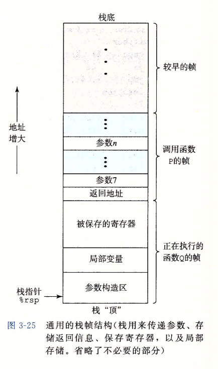
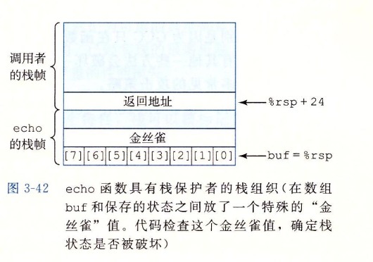

一、本章主要内容

二、程序编码
计算机系统使用了多种不同形式的抽象，利用更简单的抽象模型来隐藏实现的细节。对于机器级编程来说，其中两种抽象尤为重要：
指令集体系结构或指令级框架：它定义了处理器状态、指令的格式，以及每条指令对状态的影响。
IA32将程序的行为描述成好像每条指令时按顺序执行的，一条指令结束后，下一条再开始。（实际上处理器并发地执行许多指令，但是可以采取措施保证整体行为与ISA指定的顺序执行完全一致）机器级程序使用的存储器地址是虚拟地址：提供的存储器模型看上去是一个非常大的字节数组。存储器系统的实际实现是将多个硬件存储器和操作系统软件组合起来。
程序存储器(program memory)包含：
程序的可执行机器代码、操作系统需要的一些信息、栈、堆。程序存储器用虚拟地址来寻址（此虚拟地址不是机器级虚拟地址）。操作系统负责管理虚拟地址空间（程序级虚拟地址），将虚拟地址翻译成实际处理器存储器中的物理地址（机器级虚拟地址）。
三、拿一个C自己玩玩
- 用c语言写一个代码文件hello.c
- 在命令行上使用“-S”选项，就能看到C语言编译器产生的汇编代码
Linux> gcc -Og -S hello.c - 编译为可执行文件
Linux> gcc -o hello hello.c - 看机器代码文件的内容，有一类称为反汇编器，带“-d”命令行
(ps：汇编指令单独写博客，本地不展开)linux> objdump -d hello四、 过程
- 过程是软件中一种很重要的抽象。它提供了一种封装代码的方式，用一组指定的参数和一个可选的返回值实现某种功能。然后，可以在程序中不同的地方调用这个函数。过程机制的构建需要实现传递控制、传递数据、分配和释放内存。
- 当x86-64过程需要的存储空间超出寄存器能够存放的大小时，就会在栈上分配空间。这个部分称为过程的栈帧。

（栈在过程中的变化单独细讲，本处不展开）
五、异质的数据结构
Struct 和 Union有下列区别：
- 在存储多个成员信息时，编译器会自动给struct第1个成员分配存储空间，struct 可以存储多个成员信息，而Union每个成员会用同一个存储空间，只能存储最后一个成员的信息。
- 都是由多个不同的数据类型成员组成，但在任何同一时刻，Union只存放了一个被先选中的成员，而结构体的所有成员都存在。
- 对于Union的不同成员赋值，将会对其他成员重写，原来成员的值就不存在了，而对于struct 的不同成员赋值 是互不影响的。
六、对抗缓冲区溢出攻击
1、栈随机化（ASLR和PIE）
为了在系统中插入攻击代码，攻击者不但要插入代码，还要插入指向这段代码的指针，这个指针也是攻击字符串的一部分。产生这个指针需要知道这个字符串放置的栈地址。在过去，程序的栈地址非常容易预测，在不同的机器之间，栈的位置是相当固定的。
栈随机化的思想使得栈的位置在程序每次运行时都有变化。因此，即使许多机器都运行相同的代码。它们的栈地址都是不同的。
实现的方式是：程序开始时，在栈上分配一段0–n字节之间的随机大小空间。程序不使用这段空间，但是它会导致程序每次执行时后续的栈位置发生了变化。
在Linux系统中，栈随机化已经变成了标准行为。（在linux上每次运行相同的程序，其同一局部变量的地址都不相同）
2、栈破坏检测
在C语言中，没有可靠的方法来防止对数组的越界写，但是，我们能够在发生了越界写的时候，在没有造成任何有害结果之前，尝试检测到它。
最近的GCC版本在产生的代码中加入了一种栈保护者机制，用来检测缓冲区越界，其思想是在栈中任何局部缓冲区与栈状态之间存储一个特殊的金丝雀值。这个金丝雀值是在程序每次运行时随机产生的，因此，攻击者没有简单的办法知道它是什么。
在恢复寄存器状态和从函数返回之前，程序检查这个金丝雀值是否被该函数的某个操作或者函数调用的某个操作改变了。如果是，那么程序异常终止。

3、限制可执行代码区域
限制那些能够存放可执行代码的存储器区域。在典型的程序中，只有保存编译器产生的代码的那部分存储器才需要是可执行的，其他部分可以被限制为只允许读和写。
现在的64位处理器的内存保护引入了”NX”(不执行)位。有了这个特性，栈可以被标记为可读和可写，但是不可执行，检查页是否可执行由硬件来完成，效率上没有损失。